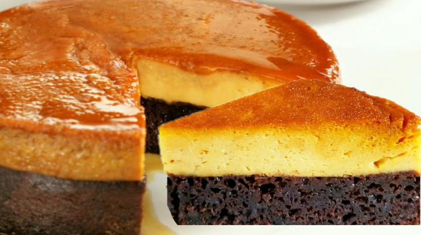

Ingredientes
- "PARA EL FLAN"
- 1 Lata de leche condensada (397 g)
- 1 Lata de leche evaporada (354 ml)
- 4 Huevos
- 1 Cucharadita de extracto de vainilla
- "PARA EL PASTEL DE CHOCOLATE"
- 1 Taza de harina de trigo
- 1/4 Taza de cacao en polvo sin azúcar
- 1 Taza de azúcar
- 1/2 Taza de leche
- 1/4 Taza de aceite vegetal
- 1 Cucharadita de polvo para hornear
- 1/2 Cucharadita de bicarbonato de sodio
- 1/4 Cucharadita de sal
- 1 Huevo
- 1/2 Cucharadita de extracto de vainilla
- 1/2 Taza de agua caliente
Preparación
- Derretir el azúcar: Coloque 1 taza de azúcar en una cacerola a fuego medio. Cocina, moviendo constantemente, hasta que el azúcar se derrita y adquiera un color dorado
- Vierte inmediatamente el caramelo en el fondo del molde para pastel, cubriendo toda la base. Deja enfriar para que el caramelo se endurezca.
- Licuar los ingredientes del flan: En una licuadora, agregue la leche condensada, la leche evaporada, los huevos y la vainilla. Licúa hasta obtener una mezcla homogénea y suave.
- Verter en el molde: Vierte la mezcla de flan sobre el caramelo endurecido en el molde. Deja reposar mientras preparas la masa de pastel.
- Precalentar el horno: Precalienta el horno a 180°C (350°F).
- Tamizar los ingredientes secos: En un tazón grande, tamiza la harina, la cacao en polvo, el polvo para hornear, el bicarbonato de sodio y la sal. Esto para que el pastel tenga una textura ligera y esponjosa.
- Mezclar los ingredientes húmedos: En otro recipiente, bate el azúcar con el huevo, la leche, el aceite y la vainilla hasta que estén bien combinados.
- Incorpora gradualmente los ingredientes secos a los húmedos, batiendo a baja velocidad. Agregue el agua caliente poco a poco, batiendo hasta obtener una masa suave y homogénea.
- Vierta suavemente la masa de pastel sobre la mezcla de flan en el molde. Es normal que las mezclas se mezclen un poco, pero se separarán durante el horneado.
- Preparar el baño maría: Coloque el molde dentro de una olla grande o bandeja profunda. Llena la olla con agua caliente hasta que llegue a la mitad del molde, asegurándote de que no entre agua en la mezcla.
- Coloca la olla en el horno y hornea por aproximadamente 1 hora. Para comprobar si está listo, inserte un tenedor en el centro; debe salir limpio.
- Deja enfriar el chocoflan en el molde a temperatura ambiente. Luego, refrigéralo durante al menos 4 horas, preferiblemente toda la noche, para que se asiente bien.
- Pasa un cuchillo alrededor de los bordes del molde para despegar el chocoflan. Coloque un plato grande sobre el molde y voltea con cuidado.
- Corta en porciones y disfruta.